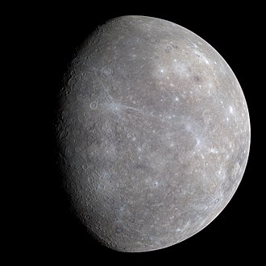

Солнце
Звезда класса G возрастом ~4,6 млрд лет. Содержит ~99,8% массы системы и светит благодаря термоядерному синтезу.
Меркурий
Самая маленькая и ближайшая к Солнцу планета. Почти без атмосферы, с сильными перепадами температур и кратерной поверхностью. Подробнее...

Венера
По размеру похожа на Землю, но с плотной CO2-атмосферой и облаками серной кислоты. Самая горячая планета из-за парникового эффекта. Подробнее...

Земля
Единственная известная планета с жизнью и жидкой водой на поверхности. Атмосфера богата азотом и кислородом, есть защитная магнитосфера. Подробнее...

Марс
Холодная пустынная планета с тонкой CO2-атмосферой и красной пылью. Имеет полярные шапки из льда и гигантский вулкан Олимп. Подробнее...
Юпитер
Крупнейший газовый гигант с мощными штормами (Большое красное пятно). Имеет тонкие кольца и множество спутников, включая Ио, Европу, Ганимед и Каллисто.
Сатурн
Газовый гигант с яркой системой колец из льда и пыли. Имеет много спутников, среди них Титан с густой атмосферой.
Уран
Ледяной гигант с метаном в атмосфере, из‑за чего выглядит голубым. Сильно наклонён (≈98°) и как бы «лежит на боку», есть слабые кольца.
Нептун
Самая дальняя планета; ледяной гигант с рекордно сильными ветрами. Имеет насыщенно-синий цвет из‑за метана и крупный спутник Тритон.